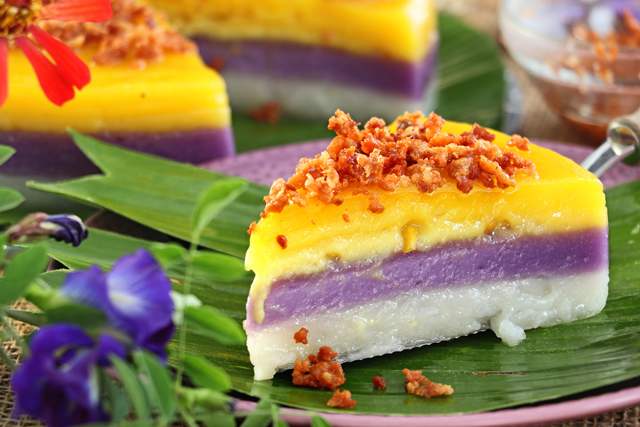
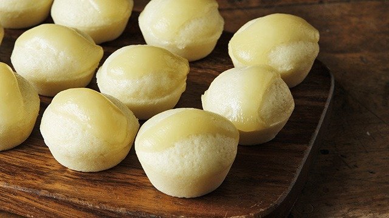

Halo-Halo Recipe
Halo-Halo is a popular cold dessert made with mixed sweet ingredients.

Leche Flan Recipe
Leche Flan is a creamy caramel custard dessert.

Turon Recipe
Turon is a deep-fried banana roll with caramelized sugar.

Ube Halaya Recipe
Ube Halaya is a sweet and creamy purple yam dessert.

Cassava Cake Recipe
Cassava Cake is a moist and chewy delicacy made from cassava.

Kutsinta Recipe
Kutsinta is a sticky rice cake with a slightly chewy texture.

Sapin-Sapin Recipe
Sapin-Sapin is a colorful layered rice cake with coconut flavors.

Puto Recipe
Puto is a soft steamed rice cake often paired with savory dishes.

Biko Recipe
Biko is a sweet sticky rice delicacy topped with coconut curd.